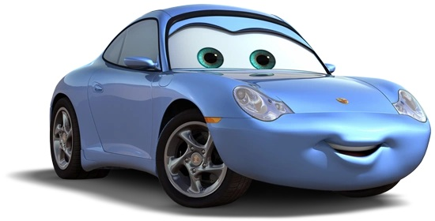
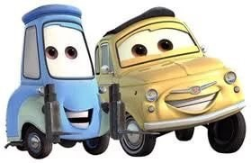

Загальна інформація
Молния Маккуин (англ. Lightning McQueen) (настоящее имя — Монтгомери Маккуин (сокращённо Монти) (англ. Montgomery McQueen)) — вымышленный антропоморфный гоночный автомобиль и главный герой франшизы Pixar «Тачки». Появлялся в мультфильмах «Тачки», «Тачки 2» и «Тачки 3», а также в мультсериалах «Байки Мэтра», «Тачки на дороге». Молния также является играбельным персонажем в каждой из частей видеоигр Cars. Молния Маккуин — лицо бренда «Тачки» и популярный талисман Disney.
Молния — профессиональный гонщик в гоночной серии «Кубок Поршня», реальным прототипом является серия Кубка NASCAR. Он завоевал 7 кубков в 2006-2016. В «Тачках 2» он участвует в Мировом Гран-при, мероприятии, продвигая новое топливо под названием «Аллинол». В конце «Тачек 3» он ненадолго берёт на себя роль главного механика и наставника Крус Рамирес, прежде чем вернуться к гонкам.
В мультфильмах Молния спонсируется «Ржавейкой» и имеет наклейки своего спонсора. Он не основан на каком-либо автомобиле, ведь Маккуин является собирательным образом, но больше всего у него черт от Chevrolet Corvette C6 и Dodge Viper. Его кузов окрашен в красный цвет с жёлтыми и оранжевыми наклейками с молниями с его гоночным номером по бокам. Его внешность меняется, но в целом сохраняет тот же образ. Молния ненадолго показан без краски или наклеек в «Тачках 3».
Друзі та союзники
- Метр (Mater) — найкращий друг МакКвіна, старий евакуатор із золотим серцем і безмежним почуттям гумору.

- Саллі — синя Porsche 911, власниця мотелю «Конуси» в Радіатор-Спрінґз, яку МакКвін щиро кохає.
 - Док Хадсон — легендарний гонщик минулого, який став наставником Блискавки.

- Луїджі та Гвідо — італійські механіки, які завжди готові допомогти на піт-стопі.
